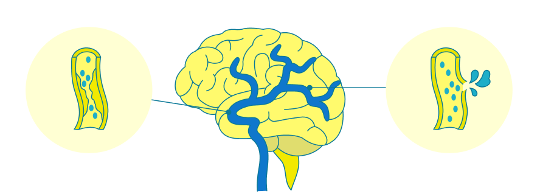

- 📢 Thanks |
- 일산병원 의료진을 만난 건 행운입니다 | 외과 강석민 교수님 저에게 활력을 주셨습니다 | 심장혈관흉부외과 배미경 교수님 눈물이 날 것 같아요 감사합니다. | 일산병원 의료진을 만난 건 행운입니다 | 외과 강석민 교수님 저에게 활력을 주셨습니다 | 심장혈관흉부외과 배미경 교수님 눈물이 날 것 같아요 감사합니다. | 일산병원 의료진을 만난 건 행운입니다 | 외과 강석민 교수님 저에게 활력을 주셨습니다 | 심장혈관흉부외과 배미경 교수님 눈물이 날 것 같아요 감사합니다. | 일산병원 의료진을 만난 건 행운입니다 | 외과 강석민 교수님 저에게 활력을 주셨습니다 | 심장혈관흉부외과 배미경 교수님 눈물이 날 것 같아요 감사합니다. | 일산병원 의료진을 만난 건 행운입니다 | 외과 강석민 교수님 저에게 활력을 주셨습니다 | 심장혈관흉부외과 배미경 교수님 눈물이 날 것 같아요 감사합니다. | 일산병원 의료진을 만난 건 행운입니다 | 외과 강석민 교수님 저에게 활력을 주셨습니다 | 심장혈관흉부외과 배미경 교수님 눈물이 날 것 같아요 감사합니다. | 일산병원 의료진을 만난 건 행운입니다 | 외과 강석민 교수님 저에게 활력을 주셨습니다 | 심장혈관흉부외과 배미경 교수님 눈물이 날 것 같아요 감사합니다. | 일산병원 의료진을 만난 건 행운입니다 | 외과 강석민 교수님 저에게 활력을 주셨습니다 | 심장혈관흉부외과 배미경 교수님 눈물이 날 것 같아요 감사합니다. | 일산병원 의료진을 만난 건 행운입니다 | 외과 강석민 교수님 저에게 활력을 주셨습니다 | 심장혈관흉부외과 배미경 교수님 눈물이 날 것 같아요 감사합니다. | 일산병원 의료진을 만난 건 행운입니다 | 외과 강석민 교수님 저에게 활력을 주셨습니다 | 심장혈관흉부외과 배미경 교수님 눈물이 날 것 같아요 감사합니다. | 일산병원 의료진을 만난 건 행운입니다 | 외과 강석민 교수님 저에게 활력을 주셨습니다 | 심장혈관흉부외과 배미경 교수님 눈물이 날 것 같아요 감사합니다. | 일산병원 의료진을 만난 건 행운입니다 | 외과 강석민 교수님 저에게 활력을 주셨습니다 | 심장혈관흉부외과 배미경 교수님 눈물이 날 것 같아요 감사합니다. | 일산병원 의료진을 만난 건 행운입니다 | 외과 강석민 교수님 저에게 활력을 주셨습니다 | 심장혈관흉부외과 배미경 교수님 눈물이 날 것 같아요 감사합니다. | 일산병원 의료진을 만난 건 행운입니다 | 외과 강석민 교수님 저에게 활력을 주셨습니다 | 심장혈관흉부외과 배미경 교수님 눈물이 날 것 같아요 감사합니다. | 일산병원 의료진을 만난 건 행운입니다 | 외과 강석민 교수님 저에게 활력을 주셨습니다 | 심장혈관흉부외과 배미경 교수님 눈물이 날 것 같아요 감사합니다. | 일산병원 의료진을 만난 건 행운입니다 | 외과 강석민 교수님 저에게 활력을 주셨습니다 | 심장혈관흉부외과 배미경 교수님 눈물이 날 것 같아요 감사합니다. |
Numbers
Time is Brain
Time is Brain
뇌졸중, 시간의 기적
Scene
의술과 기술이 만나
의술과 기술이 만나
찾아내는 희망, 로봇수술센터
일산병원은 지난 2016년 다빈치 Xi로봇수술 시스템을
도입한 이래 해마다 꾸준한 성장세를 기록하며 경기북부
지역에서 대표적인 로봇수술 거점병원으로 자리 잡았다.